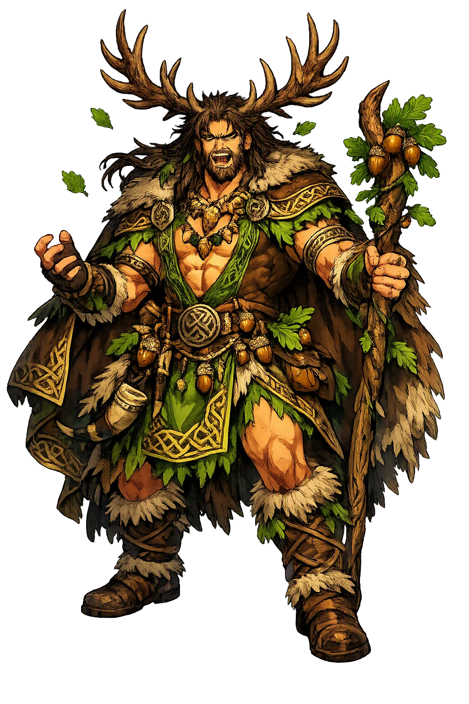
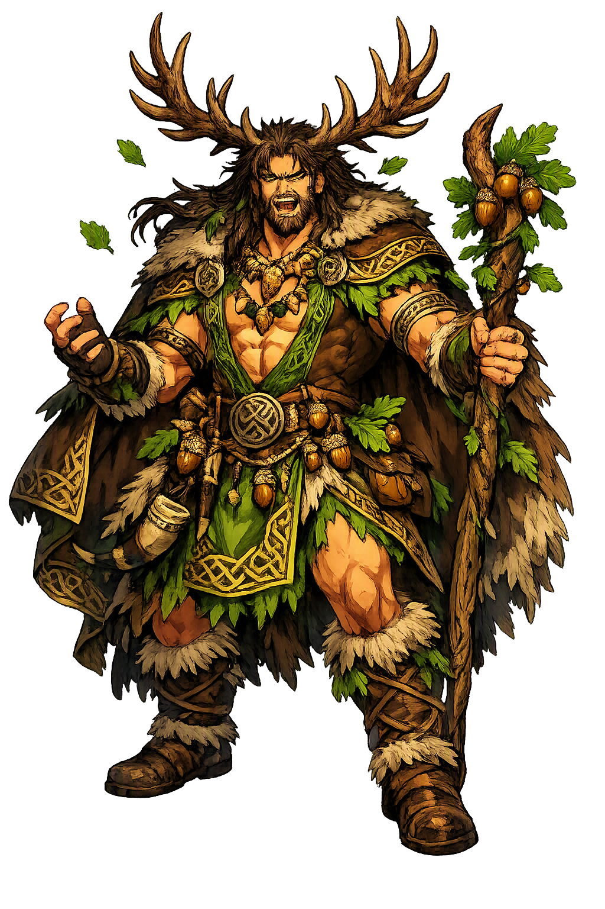

The Authentic Orthography
Wilderness, Animals, Fertility · The Horned One (from Gaulish)

Unicode restoration and ASCII comparison
Cernunnos
The name survives in scholarly transliteration. Cernunnos is the standard Celtic romanisation, documented in academic sources — “The Horned One (from Gaulish)”. Because the spelling uses only Latin letters, the form is the same in both ASCII and Unicode.
No indigenous writing system is securely attested for individual celtic names. The form shown is a modern scholarly transliteration.
cernunnos
The plain cernunnos form is identical to the Unicode restoration. Because this name is already written in Latin letters, no diacritics, stress, or script information were lost — only capitalization differs.
Cernunnos
The Unicode restoration does not need to recover lost marks for Cernunnos. Its value is canonical spelling and consistent cataloguing, not the reconstruction of erased orthography. The domain is readable as-is to both DNS and humanity.
Cernunnos.com → cernunnos.com
The non-ASCII characters in Cernunnos are encoded while the ASCII remains visible. To the DNS, it is Punycode. To humanity, it is Cernunnos.
How Cernunnos is preserved in writing
No indigenous writing system is securely attested for individual celtic names. The form shown is a modern scholarly transliteration.
Contribute scholarly provenance →Owned, ideal, and ASCII forms of Cernunnos
Cernunnos
The full Unicode restoration. cernunnos.com is not in the PuniCodex collection — it is watched for release; if it drops, this temple upgrades to an owned flagship.
How Cernunnos was spoken
The Antlered Lord Between the Wild and the Otherworld
Cernunnos is the horned god of Gaul: named once in stone at Paris, pictured across the Celtic world as the cross-legged, antlered lord who holds the torc of rank in one hand and the ram-horned serpent of the underworld in the other, with the beasts of the wild gathered at his back.
The stag's crown the single inscription illustrates: the name means 'the horned one', and the Paris stone shows exactly that.
The gold neck-ring of rank — held in the god's hand on the Gundestrup plate, hung from the antlers on the Paris pillar.
The hybrid creature of Gaulish art — serpent's body, ram's horns — coiled in the god's left hand on the cauldron plate.
The seated posture of the Gundestrup figure, echoed at Reims and Saintes: the stillness of the lord of animals.
Stories of Cernunnos
Cernunnos has no mythology in the literary sense — no tale, no genealogy, no surviving word of his deeds. Gaul wrote no epics down. What survives is a dossier of stone, silver, and bronze: one inscription that names him and a gallery of images that show him, and the whole tradition must be read from those.
Under the choir of Notre-Dame, in 1711, workmen uncovered the monument the boatmen's guild of the Parisii — the nautae Parisiaci — had raised to Jupiter in the reign of Tiberius, early in the first century CE. Among its carved gods, one block shows a balding, bearded head wearing antlers, with a torc hanging from each antler, and above the figure runs the inscription [C]ERNVNNOS. The first letter is lost and restored by convention, but the reading has held for three centuries of scholarship: this is the only text in the world that names the horned god. Everything else called Cernunnos is an identification argued from this single stone.
In 1891 a peat-cutter's spade struck silver in the Rævemosen bog at Gundestrup in Jutland: a great gilded vessel of thirteen plates, the masterpiece of Celtic metalwork, now in the National Museum of Denmark. On one interior plate sits the figure the whole world now pictures when it hears the name — cross-legged, antlered, a torc gripped in the right hand and a ram-horned serpent in the left, while a stag with matching antlers stands beside him and the animals of the wild close round: boar, bull, and a wolfish beast padding toward him. No inscription names him, and honest scholarship marks the identification as inference — but the face, the horns, the torc, and the serpent are the Paris pillar's figure seated in full.
The figure recurs across the Roman Gaulish world without ever being named again. At Reims an altar shows an antlered, cross-legged god seated between Apollo and Mercury, emptying a sack of grain or coin over a bull and a stag — the horned one as the source of abundance. At Saintes a relief gives the cross-legged figure his serpents again. In the rock carvings of Val Camonica in northern Italy a standing antlered figure with torcs on his arms was cut perhaps four centuries before the Paris pillar — the oldest of all the horned images, and the proof that the type long predates the name's one surviving attestation.
Insular Celtic literature preserves no Cernunnos — but it preserves a name that has tempted scholars since the nineteenth century. Conall Cernach, the Ulster Cycle hero who stands beside [[cuchulainn|Cú Chulainn]] as the second champion of Ulster, bears the epithet cernach, and the possibility that his name continues the same horn-root as the Gaulish god has been argued from Vendryes to Mac Cana. The honest verdict is suspension: the philology permits the connection, the sources never confirm it, and Mac Cana himself counsels caution. The horned god of Gaul may have an Irish cousin in the hero-lists — or the resemblance may be the oldest false friend in Celtic studies.
Cernunnos is the god built from evidence alone. No hymn, no saga, no genealogy — one word on a Paris stone, one silver plate from a Danish bog, and a scattered congregation of images that agree with each other across six hundred miles and four hundred years. He asks a different kind of attention than the storied gods: not 'what did he do?' but 'what did they see, that they carved him so carefully and wrote his name so rarely?' The answer the monuments give is always the same: the still one in the middle of the animals, holding rank in one hand and the underworld in the other, entirely at peace. Some gods are known by their stories. This one is known by his posture — and the posture has proved enough.
Enter Extended Lore